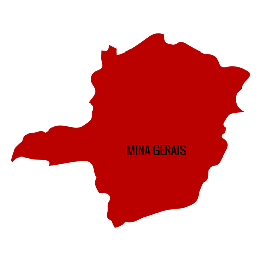
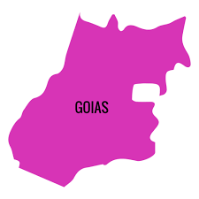
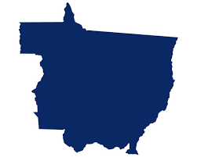
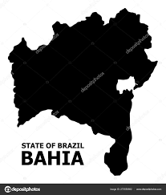

Fonte MINAS GERAIS. Governo. Disponível em:
Clique na figura acima para voltar ao menu principal
Clique nesse link baixo para saber sobre a historia de Goias
Eatado de Goias

Clique nessa figura acima para voltar para o estado de Minas Gerais
Historia sobre Goias
O nome Goiás origina-se da denominação da tribo indígena “guaiás, que quer dizer “indivíduo igual, gente semelhante, da mesma raça”.
A história do estado está na descoberta das suas primeiras minas de ouro, nos séculos XVII e XVIII, iniciada com a chegada dos bandeirantes, vindos de São Paulo em 1727.
O início dos povoados coincide com o ciclo do ouro, minério explorado nesta época pelos bandeirantes.
As primeiras Bandeiras exploravam o interior do estado em busca de riquezas minerais. Outras empresas comerciais de particulares foram organizadas para captura de índios. Alguns historiadores apontam que o bandeirante Bartolomeu Bueno da Silva, o Anhanguera, foi o descobridor de Goiás já que foi o primeiro a se fixar no estado. Em outubro de 1725, após três anos da saída dos bandeirantes de São Paulo, para lá eles retornam com a descoberta de minas e córregos auríferos.
Meses depois, organiza-se nova bandeira para ver e explorar tais minas e córregos, liderada novamente por Bartolomeu e João Leite da Silva Ortiz, seu guarda-mor. A primeira região ocupada foi a do Rio Vermelho, onde foi fundado o Arraial de Sant’Ana, mais tarde chamado de Vila Boa e depois de Cidade de Goiás.
Goiás é um estado da região Centro-Oeste do Brasil. Sua parte norte foi desmembrada em 1988, dando origem ao estado do Tocantins.
Com 340.106,492 km², possui 246 municípios. Faz limite com Mato Grosso do Sul, Mato Grosso, Tocantins, Bahia, Minas Gerais pelo Distrito Federal.
São Paulo começou a ser colonizada em 1532 quando Martim Afonso de Souza fundou a Vila de São Vicente (hoje Baixada Santista). Em busca de novas pessoas para evangelizar, um grupo de jesuítas desbravou a Serra do Mar e chegou até o Planalto de Piratininga onde fundaram um colégio em 1554, ao redor do qual se iniciou a construção das primeiras casas, dando origem ao povoado de São Paulo de Piratininga.
Nos primórdios, São Paulo vivia da agricultura de subsistência, depois da implantação da lavoura de cana-de-açúcar e também sonhava com a descoberta do ouro e dos metais preciosos. As viagens ao interior do país – Bandeiras – eram expedições organizadas para procurar pedras e metais preciosos nos sertões distantes.
De São Paulo, partiam as Bandeiras ao longo de todo século XVIII. A virada aconteceu na passagem para o século XIX, quando as plantações de café substituíram as de cana-de-açúcar para ocupar o primeiro plano da economia nacional.
A expansão da cultura do café fez com que as estradas de ferro se multiplicassem. O mesmo período também foi marcado pela vinda de imigrantes em massa para substituir a mão-de-obra nas plantações de café, com o fim da abolição da escravatura em 1888.
A importância de São Paulo na expansão cafeeira e do gado em Minas Gerais fez surgir a conhecida “política do café-com-leite” quando paulistas e mineiros se revezavam na Presidência da República.
São Paulo é um dos estados da região Sudeste e tem por limites Minas Gerais, Paraná, Rio de Janeiro, Mato Grosso do Sul e o Oceano Atlântico. Possui 645 municípios e sua área total é de 248.219,627 km².
As primeiras expedições rumo ao que hoje é o estado do Mato Grosso datam de 1.525 quando Pedro Aleixo Garcia segue para Bolívia permeando os rios Paraná e Paraguai.
Após esse episódio, portugueses e espanhóis migram para a região por terem ouvido falar nas riquezas daquelas terras pouco exploradas.
Em 1718, um bandeirante chamado Pascoal Moreira Cabral Leme subiu pelo rio Coxipó e descobriu enormes jazidas de ouro, dando início à corrida do ouro, fato que ajudou o povoamento da região. Um ano depois seria fundado o Arraial de Cuiabá que passaria a se chamar Vila Real do Senhor Bom Jesus de Cuiabá. E em 1748 seria criada a capitania de Cuiabá.
Quando declarada a independência do Brasil, o governo de D. Pedro I nomeou para Mato Grosso cinco governantes e os fatos mais importantes ocorridos nesses anos de 1822 a 1840 foram a oficialização da Capital da Província para Cuiabá e o movimento conhecido como 'Rusga' - movimento nativista de matança de portugueses.
Ainda no Império, Mato Grosso foi governado por 28 presidentes nomeados pelo Imperador, até a Proclamação de República, em 15 de novembro de 1889.
Durante o governo de Dom Pedro II, a Guerra da Tríplice Aliança, movida pela República do Paraguai contra o Brasil, Argentina e Uruguai, iniciada em 1864 e terminada a 1870 com a morte do Presidente do Paraguai, Marechal Francisco Solano Lopez foi outro fato muito importante na história do estado.
A partir do início do século XIX, com a diminuição da extração de ouro naquelas terras, a economia declina e a população para de crescer. Militares e civis dão início a um movimento separatista em 1892, contra o governo do então presidente marechal Floriano Peixoto. Mas o movimento separatista acaba sendo sufocado por intervenção do governo federal.
A economia do estado começa a melhorar com a implantação de estradas de ferro e telégrafos, época em que começam a chegar seringueiros e criadores de gado.
Em 1977, Mato Grosso é então desmembrado em dois estados: Mato Grosso e Mato Grosso do Sul.
Mato Grosso é um dos estados do Centro-Oeste brasileiro. Faz limite com Amazonas, Pará, Tocantins, Goiás, Mato Grosso do Sul, Rondônia e a Bolívia, país vizinho, e possui 141 municípios.
Não podemos falar da história da Bahia sem falar da história do Brasil já que foi em Porto Seguro, município ao sul do estado, em 22 de abril de 1500 que os portugueses aportaram, capitaneados por Pedro Álvares Cabral cuja esquadra rumava para a Índia.
A primeira missa viria a ser celebrada quatro dias depois, 26 de abril, pelo frei Henrique Soares Coimbra, na localidade de Coroa Vermelha. No dia seguinte, foi cortada a primeira madeira com que se fez uma cruz para ser celebrada a segunda missa, em 1º de maio. No mesmo dia, Cabral partia para Índia, enquanto o português Gaspar de Lemos seguia para Lisboa para avisar sobre o descobrimento para o rei de Portugal, Dom Manuel I. Na terra, chamada por Cabral de Vera Cruz, permaneceram dois homens para se entender com os nativos.
Em 1501, os portugueses organizaram uma nova expedição, desta vez de reconhecimento à terra descoberta no ano anterior. Essa foi dirigida pelo navegador Américo Vespúcio. A nova esquadra chegaria em 1º de novembro a um grande golfo, a Baía de Todos-os-Santos.
Logo que foi descoberto o país, Bahia começou a ser colonizada, povoada e conquistada principalmente depois da descoberta do pau-brasil no século XVI.
Após o pau-brasil, teve início o ciclo da cana-de-açúcar seguida pelo do ouro e diamante.
A partir de 1530, a coroa portuguesa implementou as capitanias hereditárias. Na Bahia, foram doadas cinco capitanias: da Bahia de Todos os Santos, a Francisco Pereira Coutinho; de Porto Seguro, a Pero de Campos Tourinho; de Ilhéus, a Jorge de Figueiredo Correia; de Itaparica, ao 1º Conde de Castanheira, Dom Antônio de Athaíde; e a do Recôncavo, a Álvaro da Costa.
O Governo-geral seria instalado depois, em 1549, em Salvador.
O território baiano foi povoado primeiramente pelos nativos (indígenas), negros africanos e pelos brancos (europeus que lá chegaram), resultando na miscigenação de raças que caracteriza o estado.
Bahia é um dos estados da região Nordeste, fazendo limite com outros oito estados: Minas Gerais ao sul, sudoeste e sudeste; Espírito Santo ao sul; Goiás a oeste e sudoeste; Tocantins a oeste e noroeste; Piauí ao norte e noroeste; Pernambuco ao norte e Alagoas e Sergipe a nordeste. É banhada pelo Oceano Atlântico e tem a mais extensa costa de todos os estados brasileiros. Ocupa uma área de 564.732,450 km².
A cidade é mencionada oficialmente pela primeira vez quando a segunda expedição exploratória portuguesa, comandada por Gaspar lemos, chegou em Janeiro de 1502, à baía, que o navegador supôs, compreensivelmente, ser a foz de um rio, por conseguinte, dando o nome à região do Rio de Janeiro.
Porém só em 1530 a corte portuguesa mandou uma expedição para colonizar a área, em vez de continuar usando-a simplesmente como uma parada em suas aventuras marítimas. Os franceses, por outro lado, tinham estado no Rio de Janeiro e arredores desde o começo do século e estavam dispostos a lutar pelo domínio da região. Em 1560, depois de uma série de escaramuças, os portugueses expulsaram os franceses.
O começo da cidade como tal foi no Morro de São Januário, mais tarde conhecido como Morro do Castelo, e depois na Praça Quinze até hoje centro vital do Rio.
O Rio de Janeiro desenvolveu-se graças à sua vocação natural como porto. Na mesma época em que ouro foi descoberto no Estado de Minas Gerais, no final do século XVII, o Governador do Brasil foi feito Vice-rei. Salvador era capital da colônia, mas a importância crescente do porto do Rio garantiu a transferência da sede do poder para o sul, para a cidade que se tornaria, e ainda é, o centro intelectual e cultural do país.
Em 1808 a família real portuguesa veio para o Rio de Janeiro, refúgio escolhido diante da ameaça de invasão napoleônica. Quando a família real voltou para Portugal e a independência do Brasil foi declarada em 1822, as minas de ouro já haviam sido exauridas e dado lugar a uma outra riqueza: o café.
O crescimento continuou durante quase todo o século XIX, inicialmente na direção norte, para São Cristóvão e Tijuca, e depois na direção da zona sul, passando pela Glória, pelo Flamengo e por Botafogo. No entanto, em 1889, a abolição da escravatura e colheitas escassas interromperam o progresso. Esse período de agitação social e política levou à Proclamação da República. O Rio, então chamado Distrito Federal, continuou sendo o centro político e a capital do país.
No começo do século XX surgiram as ruas largas e construções imponentes, a maioria no estilo francês fin-de-siècle. O Rio de Janeiro manteve sua posição até a inauguração de Brasília como capital da república em 1960. Capital do Estado do Rio de Janeiro, a cidade continua sendo o centro social e cultural do país.
A pessoa natural do Rio de Janeiro, coisas ou fatos a ela relacionados são chamados de carioca, palavra de origem tupi (kari´oka, casa de branco, de kara´i-branco e oka-casa).
Formação Administrativa
A Cidade de São Sebastião do Rio de Janeiro, fundada a 01-03-1565, teve logo alguns cargos essenciais providos pelo governador-geral Mem de Sá, como seja, o alcaide-mor, ouvidor, juiz de órgãos e feitor da fazenda. Salvador Correia de Sá nomeou o medidor de terras, para resolver o problema das sesmarias.
A terra fazia, então, parte da capitania doada a Martim Afonso de Sousa. Nada Comprova que ele tenha cedido seus direitos.
Pertenciam à Cidade de São Sebastião as populações ribeirinhas da baía da Guanabara como os centros de povoamento circunvizinhos que eram chamados “freguesia de terra adentro e freguesia da costa a fora”. O termo da Cidade estendia-se, na orla atlântica, de Ponta Negra à Ponta da Marambaia, e, no interior, galgando a serra do mar, antiga a margem direita do curso médio do Paraíba do Sul.
A Carta Régia, de 11-03-1757, atribuiu à Câmara o título de Senado da Câmara e ao ouvidor as atribuições de prefeito.
Em 1763 passa a ser capital do Brasil Colônia transferida da Bahia.
O Alvará de 05-04-1808, cria a Intendência Geral da Polícia da Corte e do Estado do Brasil, ficando o Intendente geral de polícia com as atribuições idênticas às de prefeito.
Sede da antiga capitania do Rio de Janeiro e, também capital da Província do mesmo nome, separou-se desta, em 1834 em virtude do Ato Adicional à Constituição de 1824, para constituir-se no município neutro da Corte. Passa, então, a administração da cidade a ser orientada pelo presidente de sua Câmara.
O Decreto nº 50, de 7-12-1889, do Governo Provisório da República dos Estados Unidos do Brasil, dissolve a Câmara Municipal e cria o Conselho de Intendência Municipal do Rio de Janeiro, capital da República. O presidente da Intendência Municipal responde pela administração do município.
A Lei nº 85, de 20-09-1892, cria os prefeitos municipais.
Com o advento da República, passou, por força do artigo 2º da Constituição de 24-02- 1891, o antigo município neutro a constituir o Distrito Federal, continuando a ser a Capital do Brasil. O parágrafo único do artigo 3º determinava que o Distrito Federal passaria a constituir um Estado, uma vez efetuada a transferência da Capital do País.
A Constituição de 1946, no seu Ato das Disposições Transitórias, artigo 4º, determina: “efetuada a transferência, o atual Distrito Federal passará a constituir o Estado da Guanabara”.
A 21-04-1960, efetivada a transferência da capital da República para Brasília, em virtude da Lei nº.3.273, de 21-10-1957, o antigo Distrito Federal passou a constituir nova unidade da Federação Brasileira – o Estado da Guanabara, por força da Lei nº.3.752, de 14 –04-1960.
A Constituição do Estado da Guanabara, promulgada pela Assembléia Constituinte a 27-03-1961, dotou o novo Estado de Três Poderes: Executivo, Legislativo e Judiciário.
O antigo Distrito Federal, desde o Decreto-lei n.º 12.356, de 10-01-1917, estava com seu território delimitado por circunscrições, chegando, como atualmente, a haver 34 circunscrições.
O Decreto n.º 898, de 09-03-1962, completado pelo de n.º 1.656, de 24-04-1963, dispõe que “para efeito de organização e administração dos serviços de natureza local, fica o território do Estado da Guanabara dividido em 21 regiões administrativas”.
Pela Lei Complementar n.º 20, de 01-07-1974, o município do Rio de Janeiro passou a ser a capital do estado do Rio após a fusão do estado do Rio de Janeiro e da Guanabara.
Em Síntese de 31-XII-1994, o município do Rio de Janeiro é constituído do distrito sede.
Assim permanecendo em divisão territorial datada de 2007.
Fonte
Rio de Janeiro (RJ). Prefeitura. 2014. Disponível em: http://www.rio.rj.gov.br. Acesso em: jan. 2014.
Fonte
GOIÁS. Governo. Disponível em: Clique no link abaixo para saber mais sobre a historia de São paulo
Estado de São Paulo

Clique nessa figura acima para voltar para o estado de Goias
Historia sobre São Paulo
Fonte
SÃO PAULO. Governo. Disponível em: http://www.saopaulo.sp.gov.br/conhecasp/historia. Acesso em: ago. 2017.
Clique no link abaixo para saber mais sobre a historia de Mato Grosso
Estado de Mato Grosso

Clique nessa figura acima para voltar para o estado de São Paulo
Historia sobre Mato Grosso
Fonte
MATO GROSSO. Governo. Disponível em: Clique no link abaixo para saber mais sobre a historia da Bahia
Estado da Bahia

Clique nessa figura acima para voltar para o estado de Mato Grosso
Historia sobre a Bahia
Fonte
BAHIA. Governo. Disponível em: Clique no link abaixo para saber mais sobre a historia do Rio de Janeiro
Estado do Rio de Janeiro

Clique nessa figura acima para voltar para o estado da Bahia
Historia sobre o Rio de Janeiro
voltar ao inicio